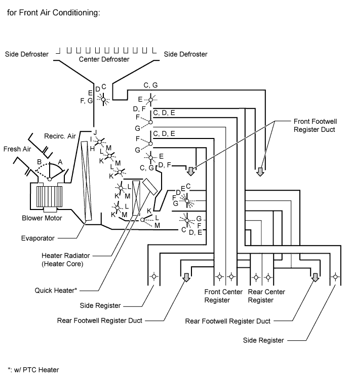
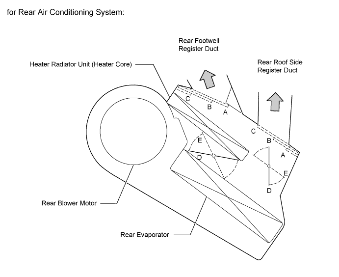
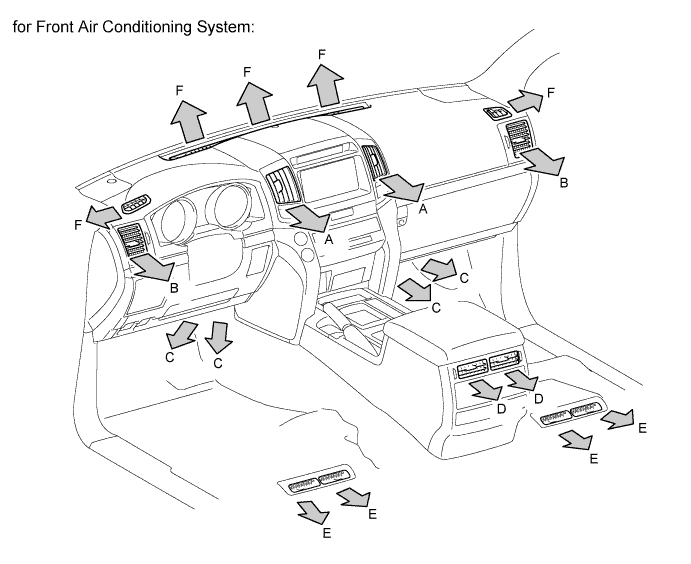
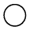
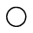
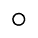
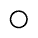
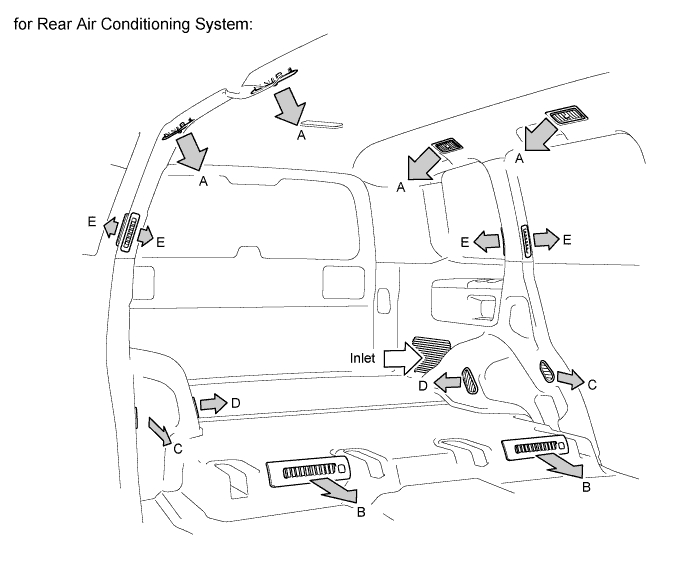

AIR CONDITIONING SYSTEM > SYSTEM DESCRIPTION |
| GENERAL |
The air conditioning system has the following features:
| MODE POSITION AND DAMPER OPERATION |

| Control Damper | Operation Position | Damper Position | Operation |
| Air Inlet Control Damper | Fresh | A | Brings in fresh air. |
| Recirculation | B | Recirculates internal air. | |
| Air Mix Control Damper | Max Cool to Max Hot | K, L, M | Varies the mixture ratio of cold air and hot air in order to regulate the temperature continuously from hot to cool. |
| Cool Air Bypass Control Damper | Max Cool to Max Hot | H, I, J | Cool air blows out from the front center register and side registers in order to adjust the temperature around the heads of the occupants during cooling or warming. |
| Mode Control Damper | Def | C | Defrosts the windshield through the center defroster. |
Foot/Def | D | Defrosts the windshield through the center defroster and side defroster while air is also blown out from the front and rear footwell register ducts. In addition, air blows out slightly from the front and rear center registers and side register. | |
Foot | E | Air blows out of the front and rear footwell register duct, front and rear center register and side register. In addition, air blows out slightly from the center defroster and side defroster. | |
Bi - Level | F | Air blows out of the center registers, side register, and rear center register to defrost the windshield. Air also blows out from the front and rear footwell register ducts. | |
Face | G | Air blows out of the center registers and side registers to defrost the windshield. |

| Control Damper | Operation Position | Damper Position | Operation |
| Mode Control Damper | Face | A | Air blows out of the rear roof side register. |
Bi - Level | B | Air blows out of the rear roof side register and rear footwell register. | |
Foot | C | Air blows out of the rear footwell register. | |
| Air Mix Control Damper | Max Cool to Max Hot | D, E | Varies the mixture ratio of cold air and hot air in order to regulate the temperature continuously from hot to cool. |
| AIR OUTLETS AND AIRFLOW VOLUME |

| Air Outlet Mode | Selectable Mode | Register | Register Duct | Defroster | |||||
| Automatic | Manual | Center | Side | Front Foot | Rear Face | Rear Foot | |||
| A | B | C | D | E | F | ||||
| FACE-U*1 | ○ | ○ |  | - |  | - | - | ||
| FACE-L*2, *6 | ○ | - |  | - | - | ||||
| B/L-U*1 | ○ | ○ |  | - | |||||
| B/L*2 | ○ | - | - | ||||||
| FOOT F*3 | ○ | - | |||||||
| FOOT R*4 | ○ | ○ | |||||||
| FOOT D*5 | ○ | - | |||||||
| F/D | ○ | ○ | |||||||
| DEF | ○ | ○ | - | - | - | - | - | ||

| Air Outlet Mode | Register Duct | |||||
| Roof | Rear Foot 1 | Rear Side 2 | Rear Foot 2 | C Pillar | ||
| A | B | C | D | E | ||
| FACE | - | - | - | - | ||
| BI-LEVEL | ||||||
| FOOT | - | |||||